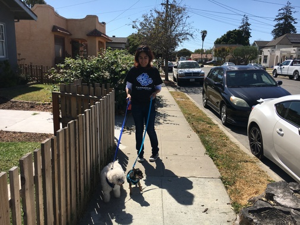

What We Do
NICO DOGO provides customers with dog-care services such as dog-walking, doggy day care, house sitting, and drop-in visit. We are located in Oakland, CA, and we will take care of dogs that are living not only in Oakland but also in neighboring sities such as Berkeley, San Francisco, Alameda and San Leandro.
Let me introduce myself. My name is Nicole Saldana, and I love dogs more than anything in the world. The photo on the right is me with my dog Bella. I have been raising her since she was a little puppy, and that helped me learn how to train dogs and how to play with dogs. Previously I used to work for two dog-caring companies, Wag Hotel and DogPile, where I got to meet and train so many dogs. Through that experience, I learned that each dog has its own unique personality and that how to train and play with dogs differs based on its individuality.
All in all, I love dogs so much. I just can't get enough of it. And if you let me take care of your dog, I will appreciate every second of it and will make sure that your doggy will have a very good time!
My Motto
My motto is this:
Ready to Play with Your Friend
Yes, sometimes a dog trainer needs to be strict to have him/her listen to me. But we also take it seriously for both me and your sog to have a good time and fun time. Who doesn't wanna have fun? We try to make every second of it memorable.